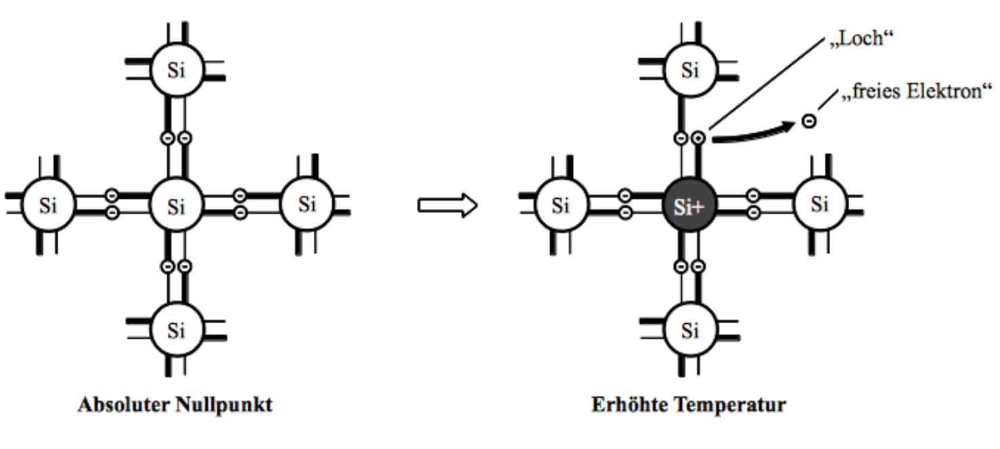
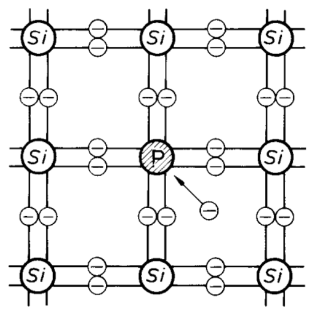
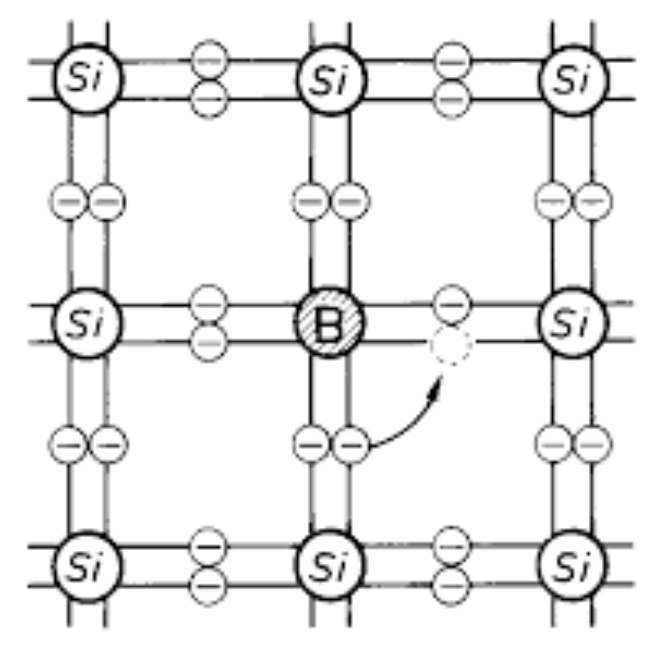

Halbleiter
Begriffserklärung
Der Begriff Halbleiter bezieht sich auf den spezifischen Widerstand reiner Materialien. Ein Halbleiter leitet den Strom besser als ein Isolator, aber schlechter als ein metallischer Leiter.
Zur Gruppe der Halbleiter gehören die Elemente Silizium $\ce{Si}$ und
Germanium $\ce{Ge}$, aber auch die Verbindungen wie Gallium-Arsenid
$\ce{GaAs}$, Indium-Phosphid $\ce{InP}$.
Für die Herstellung von Halbleiterbauelementen wird hauptsächlich
Silizium $\ce{Si}$ verwendet.
Leitungsvorgänge
-
Beträgt die Temperatur $T = 0K$ so befinden sich die Atome im Ruhezustand und die Valenzelektronen sind fest im Kristallaufbau gebunden. Für einen Strom stehen also keine Ladungsträger zur Verfügung. Der Halbleiter verhält sich wie ein Isolator und sein elektrischer Widerstand ist unendlich groβ.
-
Erhöht sich die Temperatur $T > 0K$, so werden aufgrund der Wärmeschwingungen Elektronen von ihren Atomrümpfen losgelöst und damit beweglich. Man bezeichnet sie dann als freie Elektronen. Verlässt ein Elektron eine Paarbindung, so fehlt an dieser Stelle eine negative Ladung und es entsteht eine Elektronenlücke, auch Defektelektron oder Loch genannt. Da dieses Loch eine fehlende negative Ladung in einer Gitterbindung ist, kann es als positiv geladenes Teilchen angesehen werden.

Mit zunehmender Temperatur entstehen jeweils paarweise Elektronen und Löcher. Dieser Prozess wird als Paarerzeugung bezeichnet. Trifft ein freies Elektron bei seiner Bewegung auf ein Loch, so kann es in das Loch hineinfallen. Danach ist es wieder gebunden und kann nicht mehr zur Leitung des Stromes beitragen. DiesesHineinfallen in ein Loch
wird als Rekombination bezeichnet. -
Legt man bei $T > 0K$ eine elektrische Spannung an einen $\ce{Si}$-Kristall, so kann man einen Stromfluss feststellen. Dieser besteht aus zwei Teilen:
-
dem Elektronenstrom vom Minuspol der Spannungsquelle zum Pluspol
-
dem Löcherstrom vom Pluspol der Spannungsquelle zum Minuspol der nur im $\ce{Si}$-Kristall erfolgt
-
Störstellenleitung
Werden dem reinen vierwertigen Silizium geringe Mengen von 3 oder 5
wertigen Fremdatomen zugesetzt, so erhält man auβer der
Eigenleitung auch die sogenannte Störstellenleitung. Die Fremdatome
werden dabei auf die regulären Gitterplätze des Siliziumkristalls
eingebaut. Dieses Einbauen von Fremdatomen bezeichnet man als Dotieren.
Die Dotierung ist ein komplexer Prozess und wird mit spezialisierten
Verfahren durchgeführt wie: Diffusion, Implantation.
N-Halbleiter
Wenn man einen reinen $\ce{Si}$-Kristall gezielt mit 5-wertigen Atomen wie: $\ce{P}$, $\ce{As}$, $\ce{Sb}$ dotiert oder verunreinigt, dann erhält man N-Silizium. Diese Atome sind Elemente der fünften. Hauptgruppe und werden als Donatoren bezeichnet.
Das eingebaute Fremdatom hat 5 Valenzelektronen. Zur Bindung an die benachbarten Si-Atome werden aber nur 4 von diesen 5 Valenzelektronen benötigt. Das fünfte Elektron ist nur schwach an das Fremdatom gebunden. Das nicht benötigte Elektron kann mit geringem Energieaufwand abgetrennt werden. Dann wird es zum freien Elektron und kann zum Ladungstransport herangezogen werden.
P-Halbleiter
Wenn man einen reinen $\ce{Si}$-Kristall gezielt mit 3-wertigen Atomen wie: $\ce{B}$, $\ce{Al}$, $\ce{Ga}$, $\ce{In}$ dotiert, dann erhält man P-Silizium. Diese Atome sind Elemente der dritten Hauptgruppe und werden als Akzeptoren bezeichnet.
Das eingebaute Fremdatom hat 3 Valenzelektronen. Es kann sich daher an 3 $\ce{Si}$-Atome binden. Eine Bindung an einem $\ce{Si}$-Atom bleibt offen. Diese offene Bindung stellt ein Loch oder Defektelektron dar. Dieses Loch kann mit geringem Energieaufwand von einem Elektron eines benachbarten Atoms besetzt werden. Dadurch entsteht eine Bewegung des Loches, die Löcherbewegung, die der Elektronenbewegung entgegengesetzt ist.